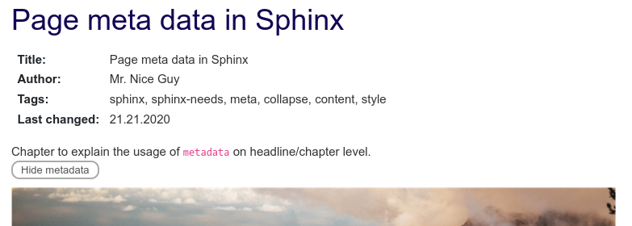

Page meta data in Sphinx¶

In bigger Sphinx projects, written by hundreds of authors, you often need to store additional data to somehow have the overall page creation and update process under control.
This data can be stored and maintained as meta-data on top of each rst file.
The main questions about a page are often:
Who is responsible?
Who has made the last changes?
When was the last change?
What is the content/goal of the page (short excerpt)?
What is the status? Still a draft?
Is there any critical content? Internal use only?
You can answer these questions on the page itself as part of the normal content. But that normally does not look nice and the information can not be reused.
A better approach is to use Sphinx-Needs, which allows us to set a need-object at the beginning of each page. This object is highly configurable and can be presented in filterable tables.
So what are our goals?
We need an object, which represents the current page
The object shall be able to store information for author, last_changed date and tags
The object shall have a title, which is the same as the one of the current page
It shall be possible to write a short excerpt
The user can hide/show the related object details
So the final result in a rst file may look like:
Page Meta Data in Sphinx
========================
.. metadata::
:id: META_DATA
:author: Mr. Nicc Guy
:tags: sphinx, sphinx-needs, meta, collapse, content, style
:last_changed: 21.21.2020
Chapter to explain the usage of ``metadata`` on headline/chapter level.
.. and more ..
And in our documentation it will be presented as:
{kind=link}

Sphinx-Needs already provides the fields id, tags. It also handles the title and the content
for us.
The used need type metadata is new, so we need to configure it in our conf.py file.
We also need to create the additional fields.
By default, Sphinx-Needs forces the user to set a title for a need. This we need to deactivate as well.
# conf.py
# Allows needs without a title, as it will be set automatically
needs_title_optional = True
# Meta need type
needs_types = [dict(directive="metadata", title="Meta data", prefix="M_", color="#BFD8D2", style="node"),
# Other need types
]
# author and last_changed option
needs_extra_options = ['author', 'last_changed']
Now, we already can create the meta-need and build the docs without any warning.
What is missing is a title, which should be copied from the page directly. For this we can use the Sphinx-Needs feature Dynamic functions and Global Options.
We use the copy function to use the values of the already collected section_name also for title.
.. meta:: {{copy("section_name")}}
As we do not want to set this copy-line on every meta-need by hand, we can configure a global option:
needs_global_options = {
'title': ('{{copy("section_name")}}', 'type == "metadata" and title is False')
}
The above config sets the title only for needs of type metadata and if the title is not set.
So the user is still able to manually set a specific title.
Let’s see how a current metadata-need would look like.
.. metadata::
:id: META_DATA
:author: danwos
:tags: sphinx, sphinx-needs, meta
:last_changed: 18.11.2021
Explains how to set meta data for a Sphinx page.
Result:
Explains how to set meta data for a Sphinx page. |
This already looks good, regarding the data. But layout and style is not so nice. Also we want to hide it from the user.
Both problems can be solved by configuring and using a custom Sphinx-Needs layout , which hides all unnecessary options and gives us full control of the content.
# conf.py
needs_layouts = {
'meta': {
'grid': 'content_footer',
'layout': {
'footer': [
'<<collapse_button("content", '
'collapsed="Hide metadata", visible="Show metadata", initial=False)>> ']
}
}
}
The grid content_footer contains 2 areas for content and a footer only.
So no area for a title or for the option values is available.
We will use the content-area to show the needed data only. The footer is used to show or hide the content part.
All we need to do is to set meta as value for layout for each metadata need.
needs_global_options = {
'title': ('{{copy("section_name")}}', 'type == "metadata" and title is False'),
'layout': ('meta', 'type == "metadata"') # This line is new
}
Explains how to set meta data for a Sphinx page. |
Okay, the collapse feature works, if you click on “Show metadata”.
But the content area is only showing the content of the need. We need to replace it with some more information. Lets use the Sphinx-Needs template feature to define the correct content.
Create a folder needs_templates on the root folder of your sphinx project.
Then add a file called metadata_template.need with the following content:
:Title: {{title}}
:Author: {{author}}
:Tags: {{tags|join(", ")}}
:Last changed: {{last_changed}}
{{content}}
And again we need to use
Global Options
to activate it for all metadata needs.
needs_global_options = {
'title': ('{{copy("section_name")}}', 'type == "metadata" and title is False'),
'layout': ('meta', 'type == "metadata"'),
'template': ('metadata_template', 'type == "metadata"') # This line is new
}
Result
Explains how to set meta data for a Sphinx page. |
Nice, now the metadata need shows required data only.
Last thing we can do is to present the metadata not so prominent, so that it does not disturb the reader.
For this we can use the style clean.
needs_global_options = {
'title': ('{{copy("section_name")}}', 'type == "metadata" and title is False'),
'layout': ('meta', 'type == "metadata"'),
'template': ('metadata_template', 'type == "metadata"'),
'style': ('clean', 'type == "metadata"') # This line is new
}
Result
Explains how to set meta data for a Sphinx page. |
That’s it. We now have a discreet metadata need, which shows required data only.
But we can also use some css-customization to get a nice “button” for the “Show metadata” text:
# conf.py
html_css_files = [
'custom.css'
]
/* _static/custom.css */
table.needs_layout_meta span.collapse span {
color: #555;
border: 2px solid #aaa;
border-radius: 10px;
padding: 2px 10px;
}
Result
Explains how to set meta data for a Sphinx page. |
Headlines¶
Another nice thing is, that we can use the metadata need also for additional headlines/chapters
on the same page, because the title is always set to the last headline.
So we can define different authors and other data in a single file.
Headlines Example¶
Example
Chapter to explain the usage of |
Forecast¶
Right now, nearly all the data must be set by hand, e.g. the author. As Sphinx and Sphinx-Needs are following the docs-as-code approach, you normally have the doc-project stored on some version control system like git.
And git already as some information, which may be nice. Last commit on this file? Last author? Last change? All this information is there.
So an update of this metadata concept would be to catch this information automatically from git.
But this topic will be part of another blog post. So stay tuned…
Explains how to set meta data for a Sphinx page. |